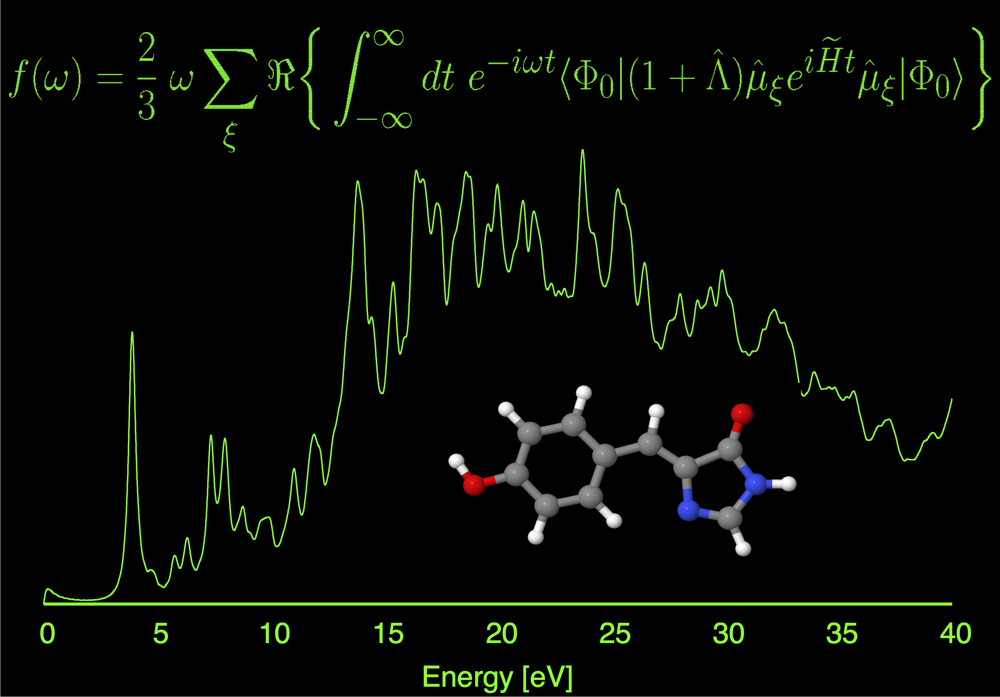
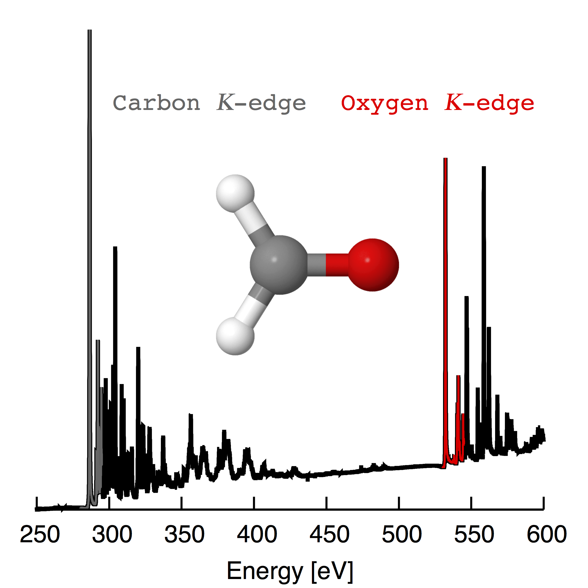

Time-dependent coupled-cluster theory
The seminar below gives an overview of time-dependent coupled-cluster methods.
Time-domain approaches to the electronic excited-state problem carry several potential advantages
over more familiar frequency-domain approaches.
First, time-domain approaches are the more natural ones for describing certain types of
processes (e.g., strong-field / non-linear effects, interactions with shaped optical pulses, etc.).
Second, time-domain approaches offer technical advantages in that
spectral information over an arbitrarily-broad energy window can be obtained from a single (or a few)
time-domain simulations. Figures 1 and 2 depict linear absorption spectra obtained from
a moment-based time-dependent (TD) equation-of-motion (EOM) coupled-cluster (CC) theory, for two
cases where the time-domain approach carries this latter technical advantage: modeling spectra for a system
with a high density of states (Figure 1) and the simultaneous description of
features separated by more than 200 eV (in this case, the K-edges of carbon and oxygen).

Figure 1. Absorption spectrum for green fluorescent protein chromaphore
computed at the TD-EOM-CC2/cc-pVDZ level of theory.

Figure 2. X-ray absorption features in formaldehyde computed at the
TD-EOM-CCSD/aug-cc-pVTZ level of theory.